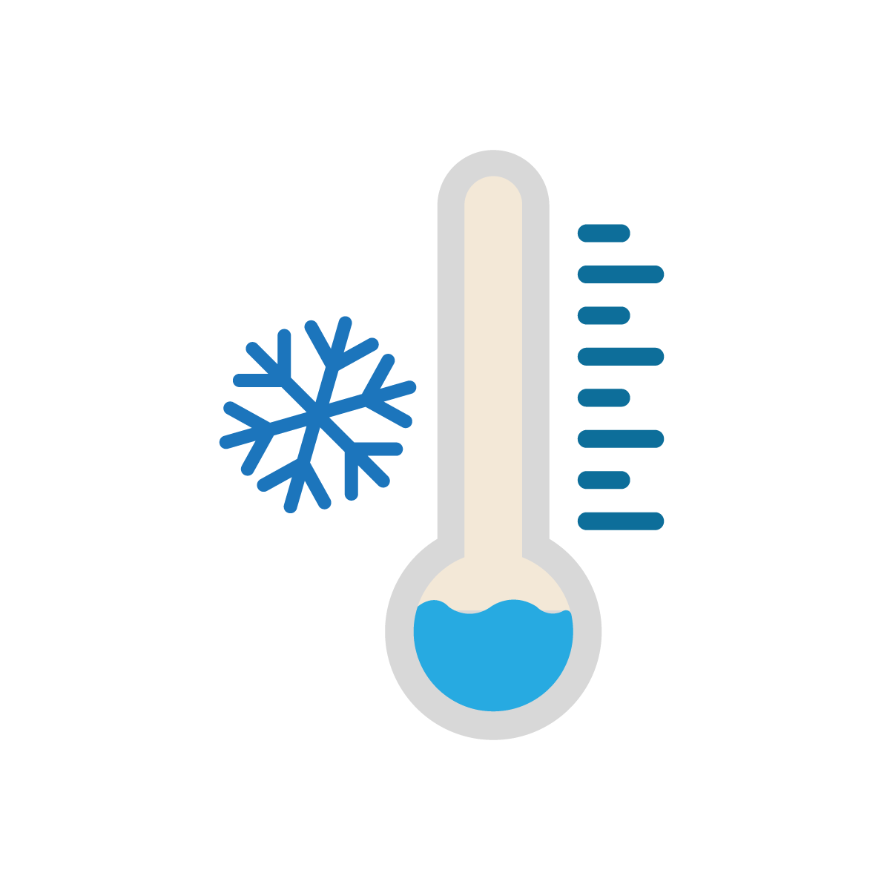

<div class="upper-data" *ngIf="weatherData">
   15">
  
  <div class="weather-data">
    <div class="location"> {{ weatherData.name }}</div>
    <div class="temperature"> {{ (weatherData.main.temp - 32) * (5/9) | number: '1.0-0'}}°C </div>
  </div>
</div>
